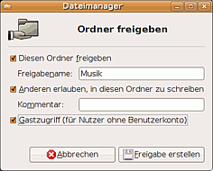
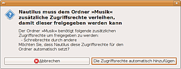
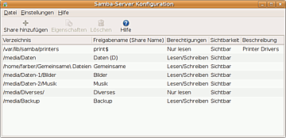
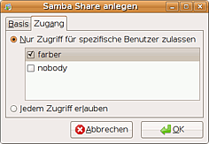
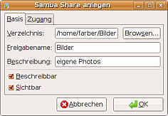
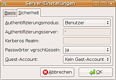
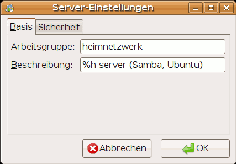
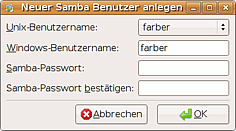

Samba Server GNOME
Dieser Artikel wurde für die folgenden Ubuntu-Versionen getestet:
Ubuntu 14.04 Trusty Tahr
Zum Verständnis dieses Artikels sind folgende Seiten hilfreich:
Ein Terminal benutzen, optional
Dateirechte verändern, optional
 Dieser Artikel bezieht sich in erster Linie auf die Desktop-Umgebung GNOME, ist aber für MATE, Unity und in weiten Teilen auch für Xfce (Xubuntu) und Lxde (Lubuntu) gültig. Für KDE (Kubuntu) gibt es einen eigenen Artikel Samba Server/KDE. Die Einrichtung eines Samba-Servers ohne graphische Benutzeroberfläche ist in Samba Server beschrieben.
Dieser Artikel bezieht sich in erster Linie auf die Desktop-Umgebung GNOME, ist aber für MATE, Unity und in weiten Teilen auch für Xfce (Xubuntu) und Lxde (Lubuntu) gültig. Für KDE (Kubuntu) gibt es einen eigenen Artikel Samba Server/KDE. Die Einrichtung eines Samba-Servers ohne graphische Benutzeroberfläche ist in Samba Server beschrieben.
Unter GNOME, Unity und MATE kann man sehr komfortabel Ordner und Dateien im Netzwerk freigeben und die wichtigsten Netzwerk-Einstellungen vornehmen. Oftmals kann man es sich damit ersparen, Eingaben über ein Terminal vorzunehmen oder umfangreiche und veraltete Administrations-Tools wie Swat oder gadmin-samba  einzusetzen.
einzusetzen.
Seit der Version 3.0.23 enthält die Samba-Suite das Tool net usershare. Dieses bietet alternativ zur klassischen Methode, Freigaben mit Root-Rechten über einen Eintrag in der Datei /etc/samba/smb.conf einzurichten, auch gewöhnlichen Benutzern die Möglichkeit, ihre eigenen Dateien ohne Root-Rechte freizugeben.
GNOME bietet Unterstützung für beide Verfahren, wobei standardmäßig nautilus-share installiert wird, das "net usershare" nutzt.
Hinweis:
Das Programm gnome-user-share ist trotz der Namensähnlichenkeit mit net usershare kein Werkzeug für Samba. Es bietet öffentliche Bluetooth- und Web-Freigaben (via Apache, HTTP, WebDAV), macht aber keinen Gebrauch von Samba.
Persönliche Freigaben mit "net usershare"¶
Der Dateimanager Nautilus nutzt mit dem Zusatzpaket nautilus-share (standardmäßig installiert) das Samba-Tool "net usershare", um Verzeichnisse im Netzwerk freizugeben.
Persönliche Freigaben können nur von Mitgliedern der Gruppe sambashare eingerichtet werden. Der Erstbenutzer ist standardmäßig Mitglied dieser Gruppe; neu hinzugefügte Benutzer müssen evtl. noch in dieser Gruppe eingetragen werden.
Für persönliche Freigaben gibt es keinen Eintrag in der allgemeinen Konfigurationsdatei /etc/samba/smb.conf. Statt dessen wird für jede dieser Freigaben im Ordner /var/lib/samba/usershares/ eine eigene kleine Textdatei mit den nötigen Angaben angelegt. Diese ist Besitz des jeweiligen Benutzers; nur dieser kann sie verändern oder löschen. Normalerweise sollte diese Datei nicht mit einem Editor bearbeitet werden!
Installation¶
Damit Verzeichnisse im Netzwerk per SMB/CIFS Protokoll (bzw. als "Windows-Freigabe") angesprochen werden können, muss folgendes Metapaket aus den Paketquellen installiert sein [1]:
samba
 mit apturl
mit apturl
Paketliste zum Kopieren:
sudo apt-get install samba
sudo aptitude install samba
Jedoch braucht man die Installation nicht unbedingt von Hand zu veranlassen, wenn man man mit Nautilus persönliche Freigaben einrichten möchte. Beim Einrichten der ersten Freigabe erfolgt hier automatisch ein Hinweis auf ggf. noch fehlende Pakete, die nach nach einer Bestätigung per Mausklick einfach nachinstalliert werden können.
Der Dateimanager Caja (MATE) bietet die gleichen Möglichkeiten wie Nautilus, wenn zusätzlich zum Metapaket samba (s.o.) noch das Paket
caja-share
mit apturl
Paketliste zum Kopieren:
sudo apt-get install caja-share
sudo aptitude install caja-share
von Hand nachinstalliert wird. Im Gegensatz dazu erlauben es die Dateimanager Thunar und PCManFM (noch) nicht, Ordner oder Dateien mittels Mausklick freizugeben. Man muss dann auf ein Terminal[2] ausweichen (s.u.)
Achtung!
Die Installation von Samba auf einem Rechner mit direktem Zugang zum Internet (ohne Router mit NAT) oder zu unsicheren Netzen kann ein Sicherheitsrisiko sein. Nötigenfalls sollte man dann die Zugriffsmöglichkeit über die Optionen interfaces und bind interfaces only in der Datei /etc/samba/smb.conf einschränken.

Freigabe erstellen¶
Nach einem  -Klick auf ein Ordner-Symbol klickt man "Freigabeoptionen" an. Es öffnet sich das selbsterklärende nebenstehende Dialogfenster. Man trägt für die Freigabe einen Namen und optional einen Kommentar ein und hakt an, was gewünscht wird: überhaupt freigeben - Schreibrechte einräumen - Gastzugang (ohne Passwort) erlauben. Alternativ gelangt man auch über "Eigenschaften -> Ordner freigeben" zum gleichen Dialog.
-Klick auf ein Ordner-Symbol klickt man "Freigabeoptionen" an. Es öffnet sich das selbsterklärende nebenstehende Dialogfenster. Man trägt für die Freigabe einen Namen und optional einen Kommentar ein und hakt an, was gewünscht wird: überhaupt freigeben - Schreibrechte einräumen - Gastzugang (ohne Passwort) erlauben. Alternativ gelangt man auch über "Eigenschaften -> Ordner freigeben" zum gleichen Dialog.
Persönliche Freigaben werden im Nautilus-Fenster durch das nebenstehend abgebildete Emblem (Doppelpfeil) oder ähnlich gekennzeichnet.
Schreibrechte¶
Über Nautilus kann man mit "net usershare" Schreibrechte nur für alle oder für niemand einräumen. Insbesondere bedeutet dies, dass bei öffentlichen Freigaben mit Gastzugriff die (sinnvolle) Einstellung "Besitzer darf schreiben und Gäste nur lesen" nicht vorgesehen ist. Differenziertere Einstellungen sind über das Terminal möglich (s.u.)
Gastzugriff und Benutzerkonto¶
Öffentliche Freigaben (mit Gastzugriff) können sofort ohne weitere Vorbereitung eingerichtet werden. Möchte man jedoch den Zugriff auf Benutzer mit einem Benutzerkonto (Benutzername und Passwort) beschränken, muss zuvor ein solches eingerichtet werden. Hierfür sind Root-Rechte nötig. Wie dies geschehen kann, ist weiter unten beschrieben.

Zugriffsrechte automatisch anpassen¶
Weil Samba nichts erlauben kann, was auf dem Server selbst verboten ist, müssen oftmals noch die Zugriffsrechte[3] für die freigegebenen Dateien angepasst werden. Dafür erscheint dann ein neues Dialogfenster mit dem Vorschlag, diese Anpassung von Nautilus automatisch durchführen zu lassen. Leider erscheint dieses Dialogfenster auch dann, wenn eine solche Anpassung gar nicht möglich ist (z.B. FAT- oder NTFS-Partition).
Hinweis:
Die automatische Anpassung der Zugriffsrechte[3] wird nur für die freigegebenen Dateien bzw. Ordner selbst durchgeführt; eventuell muss man zusätzlich noch die Zugriffsrechte übergeordneter Ordner von Hand anpassen.
Dateien von Windows-Partitionen freigeben¶
Mittels GNOME/Nautilus lassen sich auch Ordner und Dateien freigeben, die sich auf einer Partition mit einem der Windows-Dateisysteme FAT oder NTFS befinden. Allerdings gibt es dabei einiges zu beachten:
Über net usershare kann ein Benutzer immer nur Dateien freigeben, die ihm selbst gehören. Da Windows-Partitionen bei der Installation von Ubuntu standardmäßig als Besitz von
rooteingebunden werden, sind ggf. die Einträge in der Datei /etc/fstab geeignet zu verändern (üblicherweiseuid=1000stattuid=0).Auch wenn ein entsprechendes Fenster erscheint, kann Nautilus die Zugriffsrechte auf FAT-Partitionen nicht anpassen. Insbesondere ist ein Gast-Zugriff auf eine Freigabe auf einer FAT-Partition nur dann möglich, wenn dieser über die Mount-Option
umaskin fstab erlaubt wird.Auch bei NTFS-Partitionen die mit den Standard-Optionen eingebunden sind, lassen sich die Zugriffsrechte nicht nachträglich ändern. Mit den Mount-Optionen
permissionsundacleingebundene NTFS-Partitionen verhalten sich dagegen wie Partitionen mit einem Linux-Dateisystem.
Hinweis:
Für das Freigeben von Dateien und Ordnern auf FAT-Partitionen lassen sich die Besitz- und Zugriffsrechte nicht nachträglich anpassen. Sie müssen vorher schon beim Einbinden der Partitionen geeignet festgelegt werden. Nähere Einzelheiten siehe Windows-Partitionen einbinden.
Gleiches gilt für NTFS-Partitionen, wenn diese nicht mit den Mount-Optionen permissions und acl eingebunden sind. Siehe hierzu NTFS-3G.
Zugriffsrechte und Sicherheit¶
Die automatische Änderung von Zugriffsrechten auf dem Server ohne detaillierte Rückmeldung kann bei unbedachter Anwendung leicht dazu führen, dass unbemerkt unerwünschte oder gar gefährliche Berechtigungen entstehen. Leicht wird vergessen, dass die veränderten Zugriffsrechte auf dem Server auch dann bestehen bleiben, wenn eine vorübergehende Freigabe wieder aufgehoben wird.
Achtung!
Zu großzügig gewährte Zugriffsrechte können vor allem in Netzwerken ein Sicherheitsrisiko darstellen! Auf Rechnern mit direkter Verbindung zum Internet (ohne Router) und Laptops, die sich gelegentlich auch mit fremden oder öffentlichen Netzen verbinden, sind öffentliche Freigaben (mit Gast-Zugang) grundsätzlich zu vermeiden.
Persönliche Freigaben im Terminal¶
Nicht alle Dateimanager bieten wie Nautilus die Möglichkeit, persönliche Freigaben einzurichten. Vielleicht möchte man auch die Zugriffsrechte auf persönliche Freigaben differenzierter gestalten, als Nautilus dies vorsieht. In diesen Fällen lassen sich persönliche Freigaben über ein Terminal[2] einrichten. Hierzu dient die Befehlszeile
net usershare add NAME_DER_FREIGABE PFAD/ZUR/FREIGABE
Werden keine Parameter angegeben, so werden die Freigaben ohne Schreibrechte und ohne Gastzugang erstellt. Die allgemeine Syntax für die Befehlszeile ist
net usershare add sharename path [comment] [acl] [guest_ok=[y|n]]
Unter "acl" können für die einzelnen Benutzer die Zugriffsrechte festgelegt werden (f = voller Zugriff, r = nur lesen, d = kein Zugriff). Vor den ACL muss jedoch zwingend ein Kommentar oder wenigstens ein "Platzhalter" ("") stehen. Beispiel:
net usershare add Musik ~/Musik "" Everyone:f guest_ok=yes
Löschen lassen sich persönliche Freigaben mittels
net usershare delete NAME_DER_FREIGABE
Eine ausführliche Beschreibung weiterer Möglichkeiten von "net usershare" findet sich im Artikel Samba Server/net usershare.
Hinweis:
Sollte die Fehlermeldung "net usershare add: malformed acl guest_ok=y (missing ':')" auftauchen, so fehlt möglicherweise vor den ACL der Kommentar bzw. der Platzhalter ("")
Allgemeine Freigaben und Einstellungen¶
Installation¶
Um über GNOME (bzw. MATE, Unity oder Xfce) auch allgemeine Freigaben (mit Root-Rechten und smb.conf) erstellen sowie Server-Einstellungen und Benutzerkonten verwalten zu können, muss zusätzlich zum Metapaket Samba (s.o.) noch das Paket
system-config-samba
mit apturl
Paketliste zum Kopieren:
sudo apt-get install system-config-samba
sudo aptitude install system-config-samba
installiert werden. Danach erscheint im Hauptmenü folgender Eintrag:
"System -> Systemverwaltung -> Samba"
Dieser Eintrag lässt sich jedoch nur aufrufen, wenn auch das Paket
gksu
mit apturl
Paketliste zum Kopieren:
sudo apt-get install gksu
sudo aptitude install gksu
installiert ist, was seit Ubuntu 13.04 nicht mehr in jeder Ubuntu-Version Standard ist.
Zusätzlich kann auch noch die Installation eines der folgenden Pakete sinnvoll sein:
samba-doc
mit apturl
Paketliste zum Kopieren:
sudo apt-get install samba-doc
sudo aptitude install samba-doc
(Samba Dokumentation)
samba-doc-pdf
mit apturl
Paketliste zum Kopieren:
sudo apt-get install samba-doc-pdf
sudo aptitude install samba-doc-pdf
(das Selbe im pdf-Format)
Fehlende Pakete (aus dem Metapaket samba) werden beim Erstellen allgemeiner Freigaben nicht automatisch nachinstalliert.
Hinweis:
Das Tool system-config-samba lässt sich auch mit anderen grafischen Oberflächen, vor allem auch Xfce (Xubuntu), verwenden. Bei LXDE (Lubuntu) muss noch zusätzlich das Paket python-glade2 installiert werden.
Möglicherweise lässt sich system-config-samba erst starten, nachdem manuell die Datei /etc/libuser.conf erzeugt wurde, z.B. durch den Befhel
sudo touch /etc/libuser.conf

Allgemeine Freigaben¶
Mit "allgemein" oder "administrativ" werden solche Freigaben bezeichnet, die in die Datei /etc/samba/smb.conf eingetragen und damit unabhängig vom jeweils angemeldeten Benutzer verfügbar sind. Allgemeine Freigaben einzurichten, zu löschen oder zu verändern ist denjenigen Benutzern vorbehalten, die als Mitglieder der Gruppe admin berechtigt sind, über sudo Root-Rechte zu erlangen.
Weil allgemeine Freigaben grundsätzlich mit Root-Rechten erstellt werden, entfällt bei ihnen auch die Einschränkung, dass jeder Benutzer nur seine eigenen Dateien freigeben kann.
Nach einem Mausklick auf den Menü-Eintrag
"System -> Systemverwaltung -> Samba"
muss der Benutzer durch Eingabe seines System-Passworts seine Berechtigung nachweisen, mit Root-Rechten zu arbeiten. Danach öffnet sich das Dialogfenster. Dort sind alle bestehenden allgemeinen Freigaben, nicht jedoch die persönlichen Freigaben des jeweiligen Benutzers aufgeführt.
 
Freigabe hinzufügen oder löschen¶
Die Angaben eines frei wählbaren Namens, unter dem die Freigabe im Netz erscheint, und des kompletten Pfads auf dem Server sind verpflichtend; fakultativ kann noch ein Kommentar hinzugefügt werden, der dann von manchen Browsern auf dem Client angezeigt wird. Außerdem muss angegeben werden, ob die Freigabe beschreibbar sein und von Browsern auf dem Client angezeigt werden soll.
Unter "Zugang" kann für jeden Benutzer mit Samba-Benutzerkonto einzeln der Zugriff gestattet oder verboten werden. Unter den Benutzern erscheint standardmäßig auch der User "nobody". Unter diesem Namen greifen sowohl Windows als auch Nautilus auf öffentliche Freigaben (mit erlaubtem Gastzugriff) zu.
Eigenschaften¶
Unter "Eigenschaften" lassen sich diese Angaben für bereits eingerichtete Freigaben nachträglich noch verändern.
Hinweis:
Die hier festgelegten Zugriffsrechte für Freigaben sind nur gültig im Rahmen der Dateirechte[3], die auf dem Server selbst gelten. Samba kann nichts erlauben, was auf dem Server verboten ist. Eine automatische Anpassung von Dateirechten, wie sie Nautilus bei persönlichen Freigaben mit net usershare vornimmt, findet beim Einrichten allgemeiner Freigaben nicht statt.
Nautilus kennzeichnet allgemeine Freigaben (im Gegensatz zu persönlichen Freigaben) nicht durch ein besonderes Emblem. Ihre Funktion wird dadurch jedoch nicht eingeschränkt. Auf keinen Fall sollte man sich aber durch das fehlende Emblem dazu verleiten lassen, eine allgemeine Freigabe zusätzlich noch über Nautilus persönlich freizugeben!
Hinweis:
Es ist durchaus möglich, auf demselben Rechner persönliche und allgemeine Freigaben nebeneinander zu verwenden. Allerdings muss man es unbedingt vermeiden, dieselbe Datei oder denselben Ordner unter dem gleichen Namen doppelt (einmal persönlich und einmal allgemein) freizugeben!
Einstellungen¶
Die im Folgenden beschriebenen Einstellungen wirken sich sowohl auf persönliche Freigaben (über Nautilus mit net usershare erstellt) als auch auf allgemeine Freigaben (mit Eintrag in smb.conf) aus. Sie können in GNOME in dem Dialogfenster vorgenommen werden, das man über den Menü-Eintrag
"System -> Systemverwaltung -> Samba"
nach Eingabe des System-Passworts mit Root-Rechten öffnet.
 
Server-Einstellungen¶
Mit "Basis" wird die Arbeitsgruppe und die im Netzwerk gültige Beschreibung des Servers festgelegt. In kleinen Heimnetzwerken ist es zu empfehlen, dass alle Rechner derselben Arbeitsgruppe angehören.
Bei "Sicherheit" ist im Regelfall der Authentifizierungsmodus "Benutzer" richtig. Passwörter sollten grundsätzlich verschlüsselt werden (wird auch von Windows so verlangt).
In dem Feld "Guest Account" wird festgelegt, wem Ordner und Dateien auf dem Server gehören sollen, die von Gästen über das Netzwerk angelegt werden. Wird hier nichts eingetragen, ist nobody Standard.
Alternativ können die Server-Einstellungen auch über einen Editor mit Root-Rechten durch Einträge im Teil [global] der Datei /etc/samba/smb.conf vorgenommen werden. Dort sind für Sonderfälle auch noch differenziertere Einstellungen möglich (siehe auch Samba Server/smb.conf).

Benutzerkonto¶
Samba führt auf dem Server eine eigene, von der System-Benutzerverwaltung getrennte Benutzer-Datenbank. Dort können aber grundsätzlich nur solche Benutzer eingetragen werden, die auf dem Server einen eigenen Account haben. Für jeden dort eingetragenen Benutzer kann man dann ein eigenes Samba-Passwort festlegen, über das er von einem beliebigen Client aus (auch von einem Windows-Rechner) auf geschützte Freigaben zugreifen darf. Dieses Samba-Passwort kann, muss aber nicht mit seinem System-Passwort übereinstimmen. Über den Eintrag "Einstellungen -> Samba-Benutzer" können Einträge in der Samba-Datenbank hinzugefügt, geändert oder gelöscht werden.
Voreingestellt als Benutzer ist auch nobody. Dieser sollte keinesfalls gelöscht und auch nicht mit einem Passwort versehen werden, da Windows und Nautilus diesen Namen standardmäßig für den anonymen Zugriff auf öffentliche Freigaben verwenden.
Alternativ kann die Samba-Datenbank auch über ein Terminal mit Root-Rechten mit dem Befehl smbpasswd verwaltet werden. Siehe hierzu Samba Server und die Manpage zu smbpasswd.
Hinweis:
Obwohl persönliche und allgemeine Freigaben auf dem Server voneinander getrennt verwaltet werden, werden sie auf dem Client nicht unterschieden. Für beide bestehen dort genau die gleichen Zugriffsmöglichkeiten.
Experten-Info:
Das Tool "system-config-samba" legt nicht – wie z.B. das veraltete Tool Swat – eine völlig neue Datei /etc/samba/smb.conf an, sondern es bearbeitet die vorhandene Datei. Wurde diese bereits vorher durch die Verwendung anderer Tools oder durch fehlerhafte Einträge beschädigt, funktioniert "system-config-samba" möglicherweise nicht. Eine unveränderte Kopie der bei der Installation von Samba eingerichteten Original-Datei smb.conf findet man üblicherweise im Ordner /usr/share/samba.
Probleme und Lösungen¶
"system-config-samba" lässt sich nicht starten¶
Wegen eines Fehlers (1387274) lässt sich system-config-samba in Ubuntu 14.10 und nachfolgenden Versionen auch dann nicht starten, wenn das Paket gksu installiert ist. Der Grund ist, dass die benötigte Datei /etc/libuser.conf fehlt. Damit system-config-samba startet, muss dann einmalig im Terminal folgender Befehl eingeben werden:
sudo touch /etc/libuser.conf
Der Server wird nicht erkannt¶
Zuerst sollte man immer überprüfen, ob der Name des Servers den Konventionen entspricht (maximal 15 Zeichen, keine unzulässigen Sonderzeichen usw.).
Wenn der Server trotzdem von keinem Client aus (auch nicht von Windows-Clients) über seinen Netbios-Namen erkannt wird, aber über seine IP ansprechbar ist, dann kann es sein, dass auf dem Server der Service "nmbd" beim Booten nicht korrekt gestartet wurde. Nach Eingabe folgender Zeile im Terminal sollte die Erkennung über den Netbios-Namen dann funktionieren:
sudo service nmbd start
Mit folgendem Eintrag in /etc/rc.local (mit Root-Rechten vorzunehmen) lässt sich dies automatisieren:
sleep 20 service nmbd start exit 0 #(diese Zeile ist bereits vorhanden)
"Heimnetzgruppe" auf Windows-Clients¶
Mit Windows 7 hat Microsoft die Einrichtung "Heimnetzgruppe" geschaffen. Samba kann mit dieser nichts anfangen und kann weder als Client noch als Server einer Windows-Heimnetzgruppe beitreten. Zur störungsfreien Kommunikation von Linux-Systemen mit Windows-Rechnern empfiehlt es sich deshalb, dort die Heimnetzgruppe nicht zu verwenden.
Links¶
Intern¶
Heimnetzwerk: Verschiedene Möglichkeiten, ein kleines privates Netzwerk einzurichten
GNOME, MATE, Unity, Xfce, Lxde: Ausführliche Informationen zum jeweiligen Desktop
Samba: Grundlegende Informationen; dort finden sich auch weitere Links
Samba Server: Weitere Informationen zum Einrichten eines Samba-Servers auch ohne GUI
Samba Server/smb.conf: Die Konfigurationsdatei eines Samba-Servers (mit Beispielen)
Samba Server/net usershare - Persönliche Freigaben über Kommandozeilen erstellen

- Erstellt mit Inyoka
-
 2004 – 2017 ubuntuusers.de • Einige Rechte vorbehalten
2004 – 2017 ubuntuusers.de • Einige Rechte vorbehalten
Lizenz • Kontakt • Datenschutz • Impressum • Serverstatus -
Serverhousing gespendet von